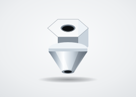
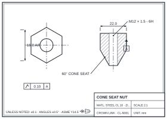

Conical Nut
Hex nuts with a conical bearing face that self-centers in chamfered or spherical seats, most familiar as wheel lug nut geometry. The taper distributes clamp load evenly and resists loosening in seated joints under vibration.
Request Quote